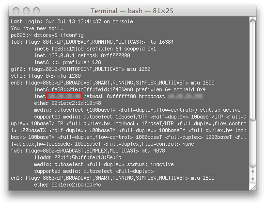
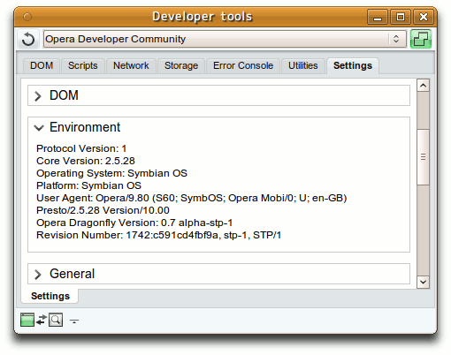

Remote debugging with Opera Dragonfly
This article is deprecated; instead, consult our Opera Dragonfly 1.0 Field Guide, which has a whole section dedicated to remote debugging.
Introduction
One of the revolutionary aspects of Opera Dragonfly is the remote debug feature. With the release of Opera Mobile 9.5 beta 1, Opera Dragonfly can be used to debug web pages and applications on a mobile phone, from your regular development machine. This article will step through the process of remotely debugging mobile devices and introduce some of the features of Opera Dragonfly.
Setting up remote debugging
Two items are required for remote debugging; a copy of Opera desktop (which includes Opera Dragonfly since version 9.5) and a mobile phone running Opera Mobile (9.7 or better). If you don’t have a mobile phone, it is possible to test this set up by using a second computer running Opera desktop 9.5+, as Opera Dragonfly supports debugging another instance of the desktop browser. This is ideal for debugging a secondary machine, for example if you want to test on a different operating system.
Once you have downloaded and installed both versions of Opera, you should open Opera Dragonfly by selecting “Tools > Advanced > Opera Dragonfly” in the Opera menu bar on your computer. Click on the “Configurations” icon in the lower right hand corner of the Opera Dragonfly window, check the “Remote Debug” check box, and click the “Apply” button (see Figure 1). Now that Opera Dragonfly is in remote debug mode, the next step is to connect to it using the mobile phone.

Figure 1: The settings needed to set up remote debugging in Opera Dragonfly.
Fire up Opera Mobile, and enter opera:debug in the URL field. A page should load allowing you to enter the required information to connect to Opera Dragonfly on your computer. Here, you should enter the IP address of your computer, and the port number to connect to (the default is 7001); you then press the “Connect” button.
Your IP address can be found on Mac and Linux by typing ifconfig in a terminal window and looking for the inet value of your active connection. In my case I’m using a Ethernet connection, so the correct inet value is the one that corresponds to the media value media: autoselect (100baseTX <full-duplex,flow-control>) status: active. If you have multiple connections—such as WiFi, Bluetooth, etc.—there will be multiple inet values, so it is important to specify the correct value (the value you need is highlighted in Figure 2). On Windows the output is somewhat simpler. You can find the IP Address by typing ipconfig on the Windows Command Prompt, and it will be labelled IP Address.
Figure 2: Finding your computer’s IP address on Mac or Linux (actual IP addresses blurred out for security reasons).
If all went well you should be presented with a message informing you that you are connected to the specified IP address and port number. For best results, I’d recommend using Active Sync (if using Windows) or WiFi (if it is available on your mobile model) for the network connection on the mobile device.
Only one connection is allowed per session—you must disconnect the existing device first if you wish to debug a new device, otherwise Opera Dragonfly will only receive and send requests to the device that was connected first.
It is important to bear in mind that the connection is not encrypted, so if you are connecting over an open public connection, rather than behind a firewall, make sure you do not transmit any sensitive information, such as credit card numbers.
Once connected, you can click on the Opera Dragonfly Environment tab (see Figure 3) to see information about the device you are connected to, and the version of Opera Dragonfly that you are running. In this case it should give the platform that Opera Mobile is running on, which in my case is Symbian.
Figure 3: The Opera Dragonfly environment tab, showing it is connected to the Symbian OS.
Debugging your first mobile page
Now that your computer and mobile are speaking to each other through the Scope protocol, open a new tab in Opera Mobile, and enter the URL of a page you’d like to debug in the URL field. Once the page has loaded, it should show up in the drop-down combo box in the Opera Dragonfly user interface. Once you select this, you are ready to start debugging the page.
With the page selected in Opera Dragonfly, click the DOM tab and select the required (X)HTML file. You will then see the generated DOM of the page that you are viewing on your mobile phone. The page can then be debugged in exactly the same way as if it were a page on your computer.
To experiment with debugging the page, I’ll walk you through Opera Dragonfly’s CSS editing feature. If you try to click on a element, such as the body element, it will scroll the element into view (if it isn’t already) on the mobile, and show the style information on the right hand side panel in Opera Dragonfly. Now try to edit one of the values. If there is a background-color, you can click on the value and change it. Click on the value of the CSS declaration and then enter a new value—red for example. Pressing the up or down arrows on the keyboard will cycle through the possible values (as seen in Figure 4).
Figure 4: Cycling through CSS values in Opera Dragonfly.
Look at the screen of the mobile while doing this and you will see that the background colour will update in real time.
There may be a short lag if you have a slow network connection between the device and the computer. Now try adjusting another property, such as font-size, and notice how the visuals on screen will change in real time. This CSS tweaking is very useful for testing what will happen when rules are changed or new rules are added. Once connected, debugging a remote device works the same way as on your local machine, so you can experiment with the features you already know, or follow the introduction to Opera Dragonfly article on Dev.Opera.
Wrapping up and disconnecting
Once you have finished debugging your page, you have to disconnect to return both Opera Dragonfly and the device into their regular modes. In Opera Mobile, you can navigate back to opera:debug and click the “Disconnect” button. If you are finished using the browser, you can also disconnect by closing the application. To return Opera Dragonfly into local debugging mode, you must open the “Settings” window again, uncheck the “Remote Debug” checkbox and click “Apply”.
Conclusion
In this article I’ve stepped through how to set up and connect a remote device to Opera Dragonfly using Opera Mobile, and briefly touched on the CSS editing feature of Opera Dragonfly. Now you should know how to use Opera Dragonfly to debug the different supported devices, right from your regular development machine.
David Storey

David Storey heads up the Open the Web initiative at Opera. This small global team is tasked with improving the compatibility of web sites across Opera's wide range of browsers, as well as promoting web standards, accessibility and best practices, so that the Web will work for all standards-aware browsers, platforms, devices and users. He is a member of the W3C Mobile Web Best Practices Working Group.
On his blog, Slightly Ajar, he discusses this work, as well as random topics, from travel to music.
David previously worked for CERN, home of the World Wide Web, before taking up his post at Opera Software.
This article is licensed under a Creative Commons Attribution, Non Commercial - Share Alike 2.5 license.
Comments
The forum archive of this article is still available on My Opera.
-
http://i.creativecommons.org/l/by/3.0/88x31.png
No new comments accepted.王佳
Wednesday, September 26, 2012